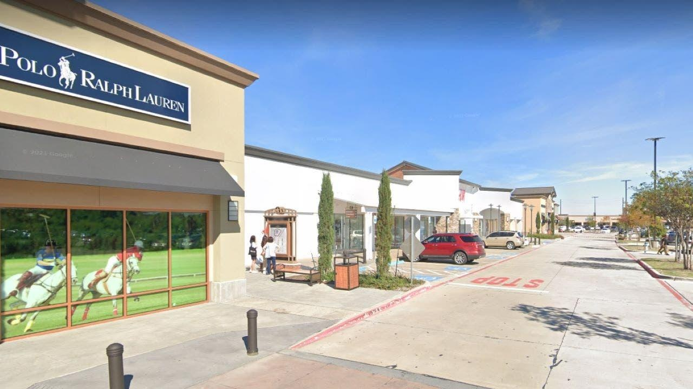

Texas authorities respond to reported outlet mall shootingTexas officials announced that eight victims were killed in a shooting at Allen Premium Outlets on Saturday afternoon, which also injured seven others. Allen Fire Department Chief Jonathan Boyd reported that four of the injured victims are stable, while three are still in critical condition. Nine people have died in total to include the suspected shooter – seven at the scene, and two who later succumbed to their injuries. Police Chief Brian Harvey said at a Saturday evening presser that a police officer was on an unrelated call nearby when gunshots erupted at Allen Premium Outlets at 3:36 p.m. The officer "engaged the suspect and neutralized the threat," according to police. A law enforcement source told Fox News the suspected shooter is dead and they believe he acted alone. A Medical City Healthcare spokesperson told FOX 4 Dallas that their facilities were treating eight victims between the ages of 5 and 61 years old. The ATF Dallas Field Division announced that it was responding to an active shooting situation on Twitter earlier on Saturday. FBI officials were also on scene. Operations Administrator Joshua W. Barnwell told FOX 4 Dallas that he heard at least 30 gunshots and saw around 60 rounds of ammunition on the ground. A mother who was at the mall with her daughter said she heard popping noises and saw sparks flying. "We were outside the Converse store and we just heard all this popping," Elaine Penicaro explained to FOX 4. "We kind of all just stopped, and then a second later, just 'Pop, pop, pop, pop, pop,' and there were sparks flying like it was right in front of us." Allen Police Department asked everyone to avoid the area on Saturday afternoon in a statement on Twitter. "Law enforcement is on the scene at Allen Premium Outlets. An active investigation is underway," the statement read. "Please avoid the area until further update." Texas Gov. Greg Abbott issued a statement expressing his condolences and affirming that the state will provide resources to local officials. "Our hearts are with the people of Allen, Texas, tonight during this unspeakable tragedy," Abbott said in the statement. "I have been in contact with Mayor Fulk and DPS Director McCraw as well as other state and local leaders and offered the full support of the State of Texas to local officials to ensure all needed assistance and resources are swiftly deployed, including DPS officers, Texas Rangers, and investigative resources." Fox News Digital reached out to Allen Police Department but has not heard back. This story is developing. Check back for updates. |
 |